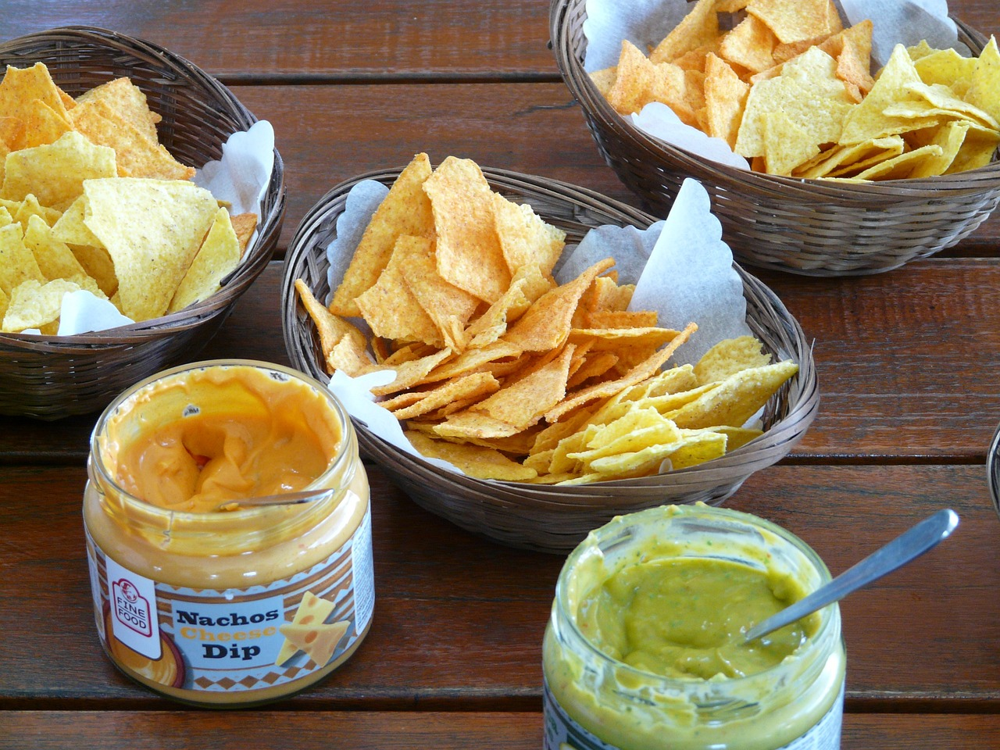

CHIPS
-
A potato chip or crisp is a thin slice of potato that has been deep fried, baked, or air fried until crunchy. They are commonly served as a snack, side dish, or appetizer. The basic chips are cooked and salted; additional varieties are manufactured using various flavorings and ingredients including herbs, spices, cheeses, other natural flavors, artificial flavors.